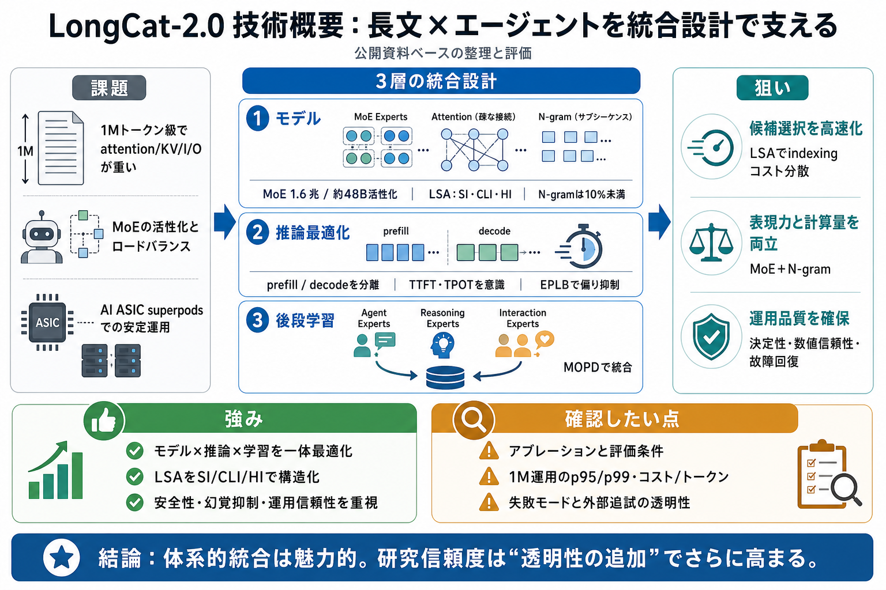

LongCat AI | LongCat-2.0 Trillion-Parameter Agentic Coding Model
[Latest: LongCat-2.0](https://www.longcatai.org/models/longcat-2.html)[Release News](https://www.longcatai.org/news/long…

[Latest: LongCat-2.0](https://www.longcatai.org/models/longcat-2.html)[Release News](https://www.longcatai.org/news/long…
# LongCat. ### VitaBench 2.0: Evaluating Personalized and Proactive Agents in Long-Term User Interactions. ### WBench: A…
LongCat ZigZag Attention (LoZA), is a sparse attention scheme designed to transform any existing full-attention models i…
LongCat (560B): Bye Sonnet! Why is NO ONE Talking about this!? This OPEN Model is AWESOME! AICodeKing 130000 subscribers…
We introduce LongCat-Flash-Omni, a state-of-the-art open-source omni-modal model with 560 billion parameters, excelling …